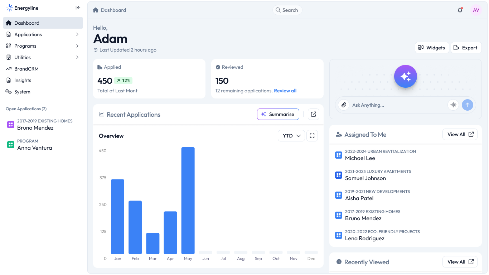
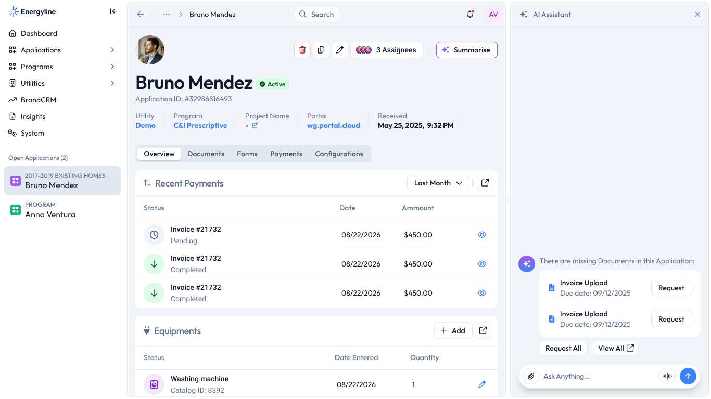
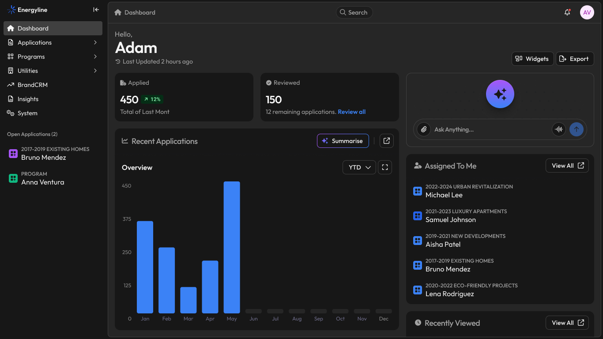
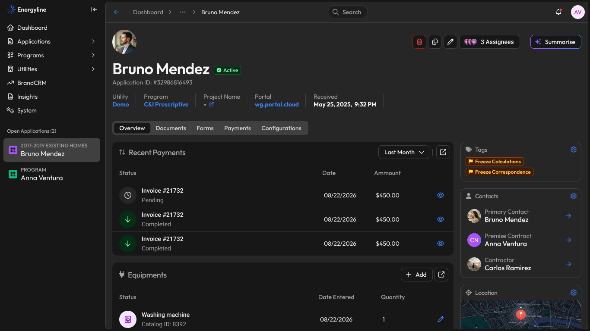
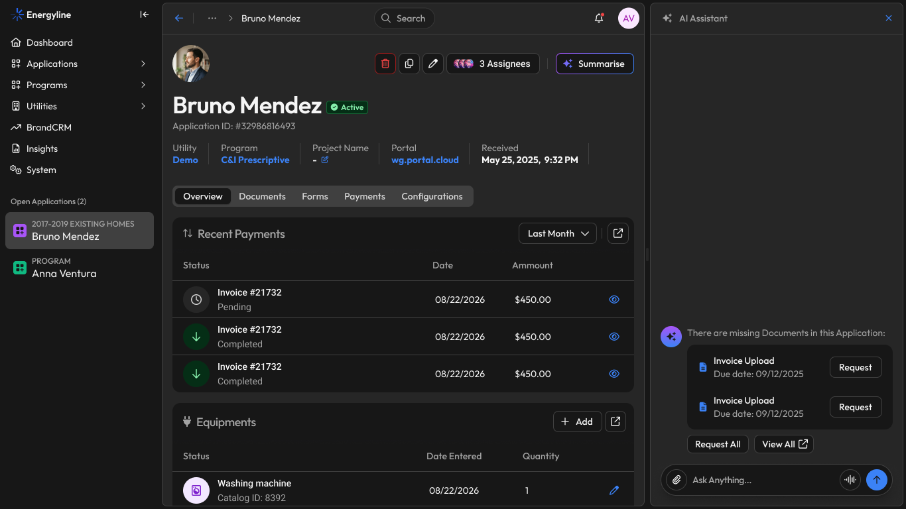

Tags:
Product Designer
UI
Design Systems
Energyline is a product concept exploring a more focused way for internal teams to manage energy-installation applications, review information, and identify next steps.
Fragmented information makes it harder to review applications, track progress, and identify what needs attention.
The goal was to help teams:
Rather than adding more information to the interface, the concept focuses on making existing information easier to understand and act on.
Bring key metrics, application statuses, and items requiring attention into a clear hierarchy.
Let users move from a high-level view to the information needed to review an application.
Explore AI-assisted summaries that help users understand application details while keeping the original information accessible.

The dashboard brings key metrics, application statuses, and relevant actions into one workspace, helping teams understand workload and identify what needs attention.
The application view groups customer information, status, and supporting details to help reviewers understand each case and determine the next step.
The AI assistant explores how concise summaries can help users understand applications faster. Original information remains accessible for verification, and decisions stay with the user.
Incomplete or conflicting data would need clear handling to avoid misleading summaries.

Semantic tokens and reusable components help maintain consistency across the interface. The structure supports light and dark themes while keeping visual hierarchy and accessibility in focus.



I prioritized application status, key metrics, and items requiring attention over a purely informational dashboard.
Trade-off: More information remains visible, but the hierarchy needs to prevent visual overload.
I split workload monitoring from application review, letting users move from a high-level overview to focused case information.
Trade-off: A clearer hierarchy requires navigation between views, so key context must remain easy to find.
I explored AI-generated summaries to help users understand application details without replacing the underlying data.
Trade-off: Summaries can reduce reading effort, but introduce risks around missing context and accuracy. Users need access to source information and remain responsible for decisions.